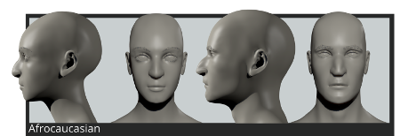
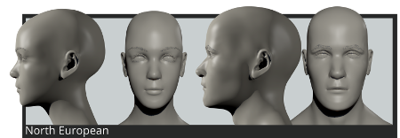
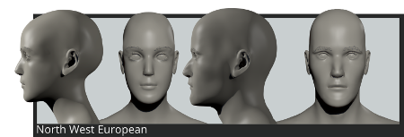

Causian phenotypes
Central European
Mainly diffused in the Alpine zone.

Skull:
Brachycephal
Main features:
Broad face, strong jaw, short nose, little eyes.
Afrocaucasian
Mainly diffused in the North Africa and Middle East.

Skull:
Dolichocephal.
Main features:
Long face, noticeable nose often convex, large eyes, compressed wings.
East European
Type mainly diffused in East and North Europe

Skull:
Brachycephal.
Main features:
Slightly concave nose, small, widely spaced eyes, thin lips, wide chin
North European
Type mainly diffused in North Europe.

Skull:
Dolichocephal.
Main features:
Tall stature, long face, forehead compressed at temples, eyes drop outside, small mouth, pronounced chin.
Euromediterranean
Type mainly diffused in the Mediterranean area of Europe.

Skull:
Mesocephal.
Main features:
Oval face, large eyes, noticeable eyelids.
Euroartic
Type mainly diffused in cold area of North Europe.

Skull:
Brachycephal.
Main features:
Round face, small chin, concave nose, upturned tip, narrow jaw.
North West European
Type mainly diffused in cold North-west area and isles of Europe.

Skull:
Mesocephal to dolichocephal.
Main features:
Long face, round eyes, narrow jaw, pronounced chin.
West Asian
Type mainly diffused in India and Middle East

Skull:
Mesocephal.
Main features:
Oval face, big eyes almond-shaped, full lips, noticeable, often convex nose.